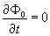
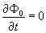

|
В. И. ЕЛИСЕЕВ ВВЕДЕНИЕ В МЕТОДЫ ТЕОРИИ
ФУНКЦИЙ ПРОСТРАНСТВЕННОГО КОМПЛЕКСНОГО ПЕРЕМЕННОГО |
|
ГЛАВА 6. ОБОСНОВАНИЕ ЦИКЛОННОЙ МОДЕЛИ АТОМНЫХ ЯДЕР В СООТВЕТСТВИИ СО СТРУКТУРОЙ ПРОСТРАНСТВА НА МАЛЫХ ЛИНЕЙНЫХ РАССТОЯНИЯХ ДЕЙСТВИЯ ЯДЕРНЫХ СИЛ. РАСЧЕТ ВОЗБУЖДЕННОГО СОСТОЯНИЯ ЯДЕР. РАСЧЕТ РАДИОАКТИВНОГО ПРЕВРАЩЕНИЯ ЯДЕР.
6.1. Модели атомных ядер. Обоснование циклонной модели атомного ядра.
Обоснование циклонной модели атомных ядер и механизма ядерных взаимодействий предварительно было проведено в ГЛАВЕ 5.
Предлагаемую циклонную модель оценим с позиций существующих моделей атомного ядра, а также с позиций, которые легли в основу их обоснования. Все существующие модели основаны на данных эксперимента. Модели ядер к конечном счете призваны существенно упростить сложный характер нуклонных взаимодействий. Характер нуклонных взаимодействий, как правило, является основой для разработки ядерной модели. К настоящему времени разработаны два типа моделей: модель независимых нуклонов и модели с сильным взаимодействием. В первой модели нуклоны двигаются независимо друг от друга в некотором общем для всех нуклонов потенциальном поле ядра, во втором случае нуклоны участвуют в коллективном взаимодействии.
Простейшими моделями до настоящего времени являются модель жидкой капли и модель ферми-газа, а также оболочечная модель ядра. Каждую из этих моделей рассмотрим с позиций циклонной модели. Еще раз отметим, что все модели призваны решить задачу построения теории ядерных сил, которая из-за сложного характера нуклонного взаимодействия в законченном виде еще не существует.
[10].Основные свойства ядерных сил определены экспериментальной ядерной физикой.
Ядерные силы относятся к короткодействующим силам. Радиус их действия меньше
, оценивается как среднее расстояние между нуклонами, связанными в ядре.Ядерные силы значительно превосходят электромагнитные силы. Интенсивность ядерного взаимодействия превосходит интенсивность электромагнитного взаимодействия ( при сравнении их на расстояниях
) в раз.Из пропорциональности энергии связи ядер количеству нуклонов в ядре следует свойство насыщения.
Свойство насыщения дважды отражается в формировании энергетических циклонных
туннелей в ядрах периодической системы элементов. Это насыщение с периодичностью формирования рядов в таблице элементов, а также как ограничение изотопного состава в пределах минимального и максимального содержания нейтронов в конкретном ядре заряда Z.Первые два свойства ядерных сил говорят о том, что они действуют в пространстве большего числа измерений, чем силы электромагнитные. В пространстве ядерных сил не работает соотношение декартовых координат, т. е.
. Как показала комплексная пространственная алгебра модуль в пространстве имеет более сложное подкоренное выражение и другую более высокую степень корня. Модуль всегда действителен.Японский физик Юкава (1935г. ) рассчитал ядерный обменный квант и определил потенциал взаимодействия нуклонов в ядре.
Как известно, скалярный потенциал
, созданный распределением зарядов , удовлетворяет волновому уравнению .
.
Если распределение зарядов не зависит от времени, то волновое уравнение сводится к уравнению Пуассона
.Решением этого уравнения является потенциал вида
.Если единичный заряд помещен в начало координат, потенциал сводится к кулоновскому потенциалу
Чтобы получить энергию взаимодействия двух зарядов, надо потенциал умножить на заряд
.
Из формулы следует радиус бесконечного взаимодействия. Это тривиальная трактовка потенциала и энергии взаимодействия. В пространстве радиус, как выше было отмечено, несет в себе структуру пространства. Взаимодействие происходит по изолированному направлению, а взаимодействующие объекты взаимно ориентируются по этому направлению.
, где  характеризует радиус туннеля взаимодействия. Решающую роль во взаимодействиях играет в пространстве
характеризует радиус туннеля взаимодействия. Решающую роль во взаимодействиях играет в пространстве  . Таким образом, даже не переписывая уравнения потенциала вскрываем новые свойства взаимодействия. Радиус
. Таким образом, даже не переписывая уравнения потенциала вскрываем новые свойства взаимодействия. Радиус  является энергетической характеристикой и зависит от массы обменного кванта взаимодействия. Вывод формул был получен из условия, что квант магнитного взаимодействия-фотон не имеет массы. В комплексном пространстве фотон интерпретируется как объект принадлежащий по своим свойствам пространству делителей нуля. Иными словами это объект имеющий одинаковую массу по пространственной и временной осям, которые исходят из разных точек начала координат. В сферических пространственных координатах вся масса этого объекта распределяется по изолированному направлению бесконечной протяженности.
является энергетической характеристикой и зависит от массы обменного кванта взаимодействия. Вывод формул был получен из условия, что квант магнитного взаимодействия-фотон не имеет массы. В комплексном пространстве фотон интерпретируется как объект принадлежащий по своим свойствам пространству делителей нуля. Иными словами это объект имеющий одинаковую массу по пространственной и временной осям, которые исходят из разных точек начала координат. В сферических пространственных координатах вся масса этого объекта распределяется по изолированному направлению бесконечной протяженности.
Если квант взаимодействия имеет массу, отличную от нуля (), то уравнение для отыскания потенциала мезонного поля приобретает вид, где  трактуется как плотность мезонного заряда нуклона. Решением этого уравнения для стационарного случая  и точечного источника, расположенного в точке , является потенциалом Юкавы, где . Потенциал определяет короткодействующий характер ядерных сил, радиус которых определяется массой полевого кванта. Энергия взаимодействия двух нуклонов определяется как произведение
трактуется как плотность мезонного заряда нуклона. Решением этого уравнения для стационарного случая  и точечного источника, расположенного в точке , является потенциалом Юкавы, где . Потенциал определяет короткодействующий характер ядерных сил, радиус которых определяется массой полевого кванта. Энергия взаимодействия двух нуклонов определяется как произведение
.
В силу комплексности пространства радиус
, гдеЯдра есть системы множества нуклонов и механизм ядерного взаимодействия, который заключается в передаче виртуальных мезонов от одного нуклона к другому, столкнулся с непреодолимыми трудностями. Безразмерная величина
, построенная из по аналогии с постоянной тонкой структуры оказывается порядка единицы. Поэтому диаграмная техника Фейнмана встретилась также с непреодолимыми трудностями. Величины характеризуют интенсивность взаимодействия, и поэтому при следует очень высокая плотность мезонного облака, окружающего нуклон, и многомезонный обмен столь же вероятен как одномезонный.Пион-это только один из мезонов, ответственный за нуклон-нуклонное взаимодействие. Комптоновская длинна волны мезона равна
. Для имеем. Потенциал Юкавы дает размерностьМини оглавление:
[0], [1.1.1, 1.1.2, 1.1.3, 1.1.4, 1.1.5, 1.1.6, 1.1.7, 1.1.8, 1.2, 1.2.1, 1.2.2, 1.2.2.a, 1.2.2.b, 1.2.2.c, 1.2.2.d, 1.2.2.e, 1.2.2.f, 1.2.2.g, 1.2.2.h, 1.2.3, 1.3.1, 1.3.2, 1.3.3, 1.3.4, 1.3.5, 1.3.6, 1.4.1, 1.4.2, 1.5, 1.6, 1.7.1, 1.7.2, 1.7.3.1, 1.7.3.2, 1.7.3.3, 1.7.4.1, 1.7.4.2, 1.8.1], [2.1, 2.2],[3.1, 3.2, 3.3, 3.4.1, 3.4.2, 3.4.3, 3.4.4, 3.4.5],[4.1, 4.2, 4.3, 4.4],[5.1, 5.1.Рис.52, 5.2, 5.3, 5.4, 5.4.Т1, 5.4.Т2, 5.4.Т3, 5.5.1, 5.5.2, 5.5.3, 5.5.4],[6.1.1, 6.1.2, 6.2.1, 6.2.2, 6.2.3, 6.2.4, 6.2.5, 6.3, 6.4.1, 6.4.2, 6.5.1, 6.5.2],[7.1, 7.2, 7.3, 7.4, 7.5, 7.6, 7.7.1, 7.7.2, 7.8.1, 7.8.2, 7.8.3, 7.9],[8.1, 8.2.1, 8.2.2, 8.3, 8.4, 8.5, 8.6, 8.6.T1, 8.7, 8.8.1, 8.8.2, 8.8.3, 8.9.1, 8.9.2, 8.9.3, 8.10, 8.10.T2, 8.10.T3],[9.1, 9.2, 9.3, Рис.88, 89, 90, 91, 92, 93, 94, 95, 96, 97, 98, 99, 100],[10.1, 10.2, 10.3, 10.4, 10.5, 10.6, 10.7, 10.8, 10.9, 10.10, 10.11, 10.12, 10.13, 10.14, 10.15.1, 10.15.2, 10.16.1, 10.16.2, 10.17, 10.18],[11]
Размещенный материал является электронной версией книги: © В.И.Елисеев, "Введение в методы теории функций пространственного комплексного переменного", изданной Центром научно-технического творчества молодежи Алгоритм. - М.:, НИАТ. - 1990. Шифр Д7-90/83308. в каталоге Государственной публичной научно-технической библиотеки. Сайт действует с 10 августа 1998.
E-mail: mathsru@gmail.com